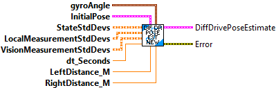
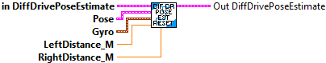
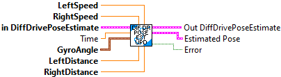
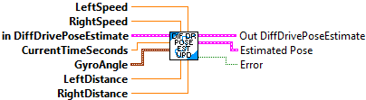

Add a vision measurement to the Unscented Kalman Filter. This will correct the odometry pose estimate while still accounting for measurement noise.
This method can be called as infrequently as you want, as long as you are calling DifferentialDrivePoseEstimator_update every loop.
To promote stability of the pose estimate and make it robust to bad vision data, we recommend only adding vision measurements that are already within one meter or so of the current pose estimate.
Inputs:
- InDIffDrivePoseEstimate -- Data cluster for this system
- visionRobotPoseMeters -- The pose of the robot as measured by the vision camera.
- timestampSeconds -- The timestamp of the vision measurement in seconds. Note that if you don't use your own time source by calling DifferentialDrivePoseEstimator_updateWithTime then you must use a timestamp with an epoch since FPGA startup (i.e. the epoch of this timestamp is the same epoch as Timer.getFPGATimestamp.) This means that you should use Timer.getFPGATimestamp as your time source in this case.
Outputs:
- OutDIffDrivePoseEstimate -- Data cluster for this system
- Error -- Returns TRUE if an error occured.

Create a vector with the current robot pose, encoder distances, and gyro
Inputs:
- initialPose -- robot pose
- LeftDist -- left encoder distance
- RightDist -- right encoder distance
Outputs:
- output Matrix -- filled matrix.

Gets the pose of the robot at the current time as estimated by the Unscented Kalman Filter.
Inputs:
- DiffDrivePoseEst - System data cluster
Outputs:
- EstimatedPose - The estimated robot pose in meters.

Internal function used by DiffDrivePoseEst_Update routines to pass to the Kalman filter Predict routine.
Inputs:
- ExtraPassedData -- Variant of extra data used by this function. (This value is not used.)
- X -- X matrix
- U -- U matrix
Outputs:
- Result -- Resulting matrix
- Error -- If TRUE, an error occured.

Internal function used by DiffDrivePoseEst_Update routines to pass to the Kalman filter Correct routine.
Inputs:
- ExtraPassedData -- Variant of extra data used by this function. (This value is not used.)
- X -- X matrix
- U -- U matrix
Outputs:
- Result -- Resulting matrix
- Error -- If TRUE, an error occured.

This set of subVI wraps an UnscentedKalmanFilter to fuse latency-compensated vision measurements with differential drive encoder measurements. It will correct for noisy vision measurements and encoder drift. It is intended to be an easy drop-in for {@link edu.wpi.first.math.kinematics.DifferentialDriveOdometry}; in fact, if you never call DifferentialDrivePoseEstimator_addVisionMeasurement and only call DifferentialDrivePoseEstimator_update then this will behave exactly the same as DifferentialDriveOdometry.
DifferentialDrivePoseEstimator_update}should be called every robot loop (if your robot loops are faster than the default then you should change the DifferentialDrivePoseEstimator_DifferentialDrivePoseEstimator(Rotation2d, Pose2d, Matrix, Matrix,
Matrix, double) nominal delta time.) DifferentialDrivePoseEstimator_addVisionMeasurement can be called as infrequently as you want; if you never call it then this class will behave exactly like regular encoder odometry.
To promote stability of the pose estimate and make it robust to bad vision data, we recommend only adding vision measurements that are already within one meter or so of the current pose estimate.
Our state-space system is:
x = [[x, y, theta, dist_l, dist_r]]? in the field coordinate system (dist_* are wheel distances.)
u = [[vx, vy, omega]]? (robot-relative velocities) -- NB: using velocities make things considerably easier, because it means that teams don't have to worry about getting an accurate model. Basically, we suspect that it's easier for teams to get good encoder data than it is for them to perform system identification well enough to get a good model.
y = [[x, y, theta]]? from vision, or y = [[dist_l, dist_r, theta]] from encoders and gyro.
Constructs a DifferentialDrivePoseEstimator.
Inputs
- gyroAngle -- The current gyro angle. (radians)
- initialPoseMeters -- The starting pose estimate.
- stateStdDevs -- Standard deviations of model states. Increase these numbers to trust your
model's state estimates less. This matrix is in the form [x, y, theta, dist_l, dist_r]?,
with units in meters and radians.
- localMeasurementStdDevs -- Standard deviations of the encoder and gyro measurements.
Increase these numbers to trust sensor readings from encoders and gyros less. This matrix
is in the form [dist_l, dist_r, theta]?, with units in meters and radians.
- visionMeasurementStdDevs -- Standard deviations of the vision measurements. Increase these
numbers to trust global measurements from vision less. This matrix is in the form [x, y,
theta]?, with units in meters and radians.
- nominalDtSeconds -- The time in seconds between each robot loop. (seconds)
- leftDistance_M -- The initial left wheel distance measurement (meters)
- rightDistance_M -- The initial right wheel distance measurement (meters)
Outputs:
- DiffDrivePoseEst -- Data cluster for this instance of this system.
- Error -- A value of TRUE indicates an error occured creating the system.

Resets the robot's position on the field.
The gyroscope angle does not need to be reset here on the user's robot code. The library automatically takes care of offsetting the gyro angle.
Inputs:
- inDiffDrivePoseEst -- system data cluster.
- poseMeters -- The position on the field that your robot is at.
- gyroAngle -- The angle reported by the gyroscope.
- LeftDistance -- The current left distance measurement (meters)
- RightDistance -- The current right distance measurement (meters)
Outputs:
- outDiffDrivePoseEst -- Updated system data cluster.

Sets the pose estimator's trust of global measurements. This might be used to change trust in vision measurements after the autonomous period, or to change trust as distance to a vision target increases.
Inputs:
- inDiffDrivePoseEst -- System data cluster
- visionMeasurementStdDevs -- Standard deviations of the vision measurements. Increase these numbers to trust global measurements from vision less. This matrix is in the form [x, y, theta]?, with units in meters and radians.
Outputs:
- outDiffDrivePoseEst -- System data cluster
- error -- A value of TRUE indicates an unexpected error occured.

Updates the the Unscented Kalman Filter using only wheel encoder information. Note that this should be called every loop.
Inputs:
- LeftSpeed -- Left wheel speed (meters/sec)
- RightSpeed -- Right wheel speed (meters/sec)
- inDiffDrivePoseEst -- system data cluster
- gyroAngle -- The current gyro angle. (radians)
- distanceLeftMeters -- The total distance travelled by the left wheel in meters. This can be the encoder reading.
- distanceRightMeters -- The total distance travelled by the right wheel in meters. This can be the encoder reading.
Outputs:
- outDiffDrivePoseEst -- system data cluster
- EstimatedPose -- The estimated pose of the robot in meters.

Updates the the Unscented Kalman Filter using only wheel encoder information. Note that this should be called every loop.
Inputs:
- LeftSpeed -- Left wheel speed (meters/sec)
- RightSpeed -- Right wheel speed (meters/sec)
- inDiffDrivePoseEst -- system data cluster
- gyroAngle -- The current gyro angle. (radians)
- currentTime -- Time at which this method was called, in seconds.
- distanceLeftMeters -- The total distance travelled by the left wheel in meters. This can be the encoder reading.
- distanceRightMeters -- The total distance travelled by the right wheel in meters. This can be the encoder reading.
Outputs:
- outDiffDrivePoseEst -- system data cluster
- EstimatedPose -- The estimated pose of the robot in meters.

Function used by LatencyCompensator_ApplyPastGlobalMeasurement
This is a work in progress!!

Internal function used by DiffDrivePoseEst_Update routine used by the VisionCorrect routine.
Inputs:
- ExtraPassedData -- Variant of extra data used by this function. (This value is not used.)
- X -- X matrix
- U -- U matrix
Outputs:
- Result -- Resulting matrix
- Error -- If TRUE, an error occured.